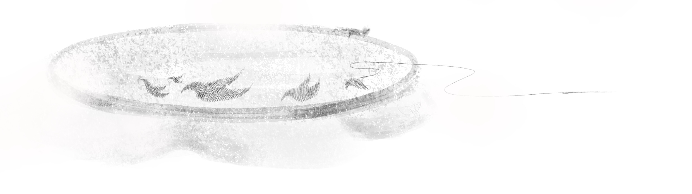

You don't need to get it done right this moment. Why not do something fun? You pick up a personal project you've been slowly working on when you have free time.

As you work, you feel the task sitting heavily in the back of your mind. You are unable to focus on what's in front of you, stress building instead of easing like it would normally do. After a few minutes, you set down the project, nausea rising in your throat.It's eating at you. You need to get this done.
or
You can't think like this, you won't be able to get it done now. You should clear your head.